KU
Konkuk University
M.S. in Artificial Intelligence · NLP Lab
Advisor: Prof. Harksoo Kim
M.S. Student · Konkuk University NLP Lab
I am interested in making large language model reasoning more reliable and efficient. My research focuses on model confidence, difficulty estimation, self-consistency, efficient reasoning, and multimodal understanding.

Konkuk University · Seoul, Korea
M.S. in Artificial Intelligence · NLP Lab
Advisor: Prof. Harksoo Kim
B.S. in Medical Artificial Intelligence
Research Intern · Language Intelligence Research Lab
Worked on an LLM-based Math Dial teaching chatbot, including model fine-tuning, evaluation-pipeline construction, and data processing.
Intern · Data Team
Worked on LLM fine-tuning, data curation, chatbot QA, web crawling, and ethics-model evaluation.
Selected publications and preprints.
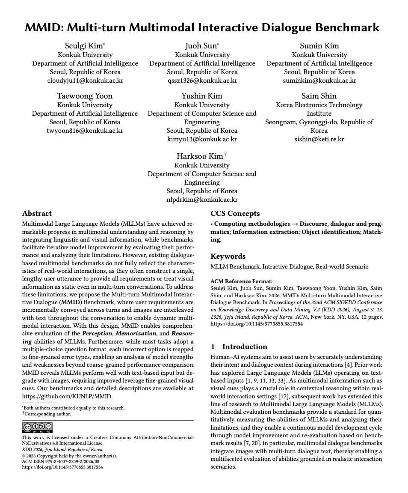
PreviewSeulgi Kim*, Juoh Sun*, Sumin Kim, Taewoong Yoon, YuShin Kim, Saim Shin, Harksoo Kim
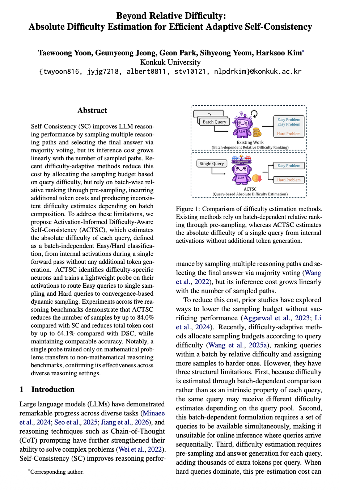
PreviewTaewoong Yoon, Geunyeong Jeong, Geon Park, Sihyeong Yeom, Harksoo Kim
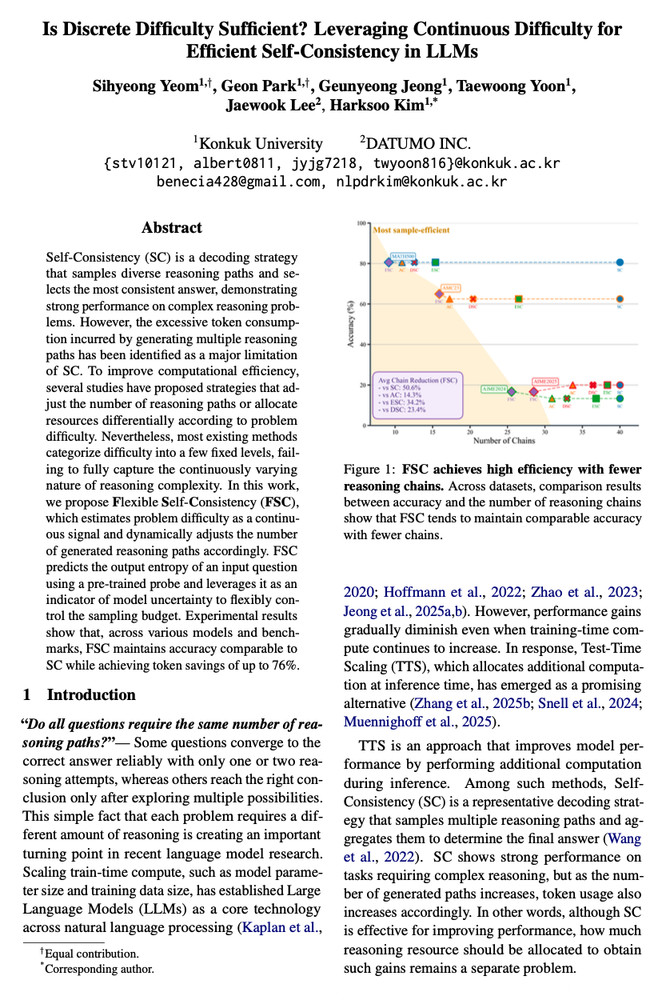
PreviewSihyeong Yeom, Geon Park, Geunyeong Jeong, Taewoong Yoon, Jaewook Lee, Harksoo Kim
Taewoong Yoon, Yushin Kim, Harksoo Kim
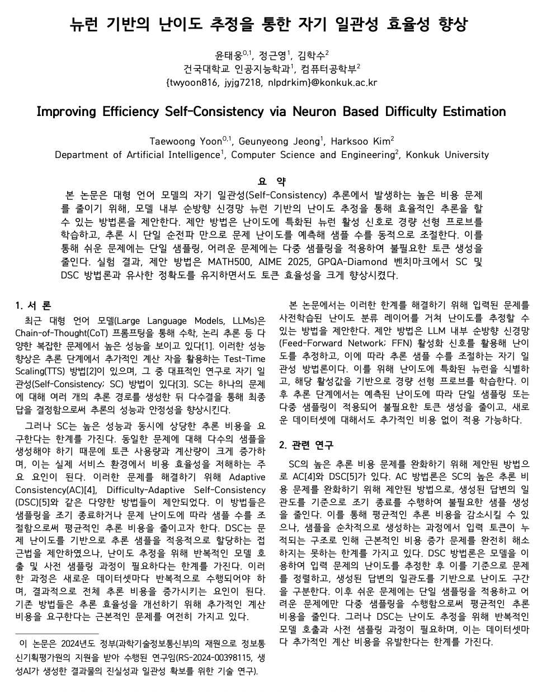
PreviewTaewoong Yoon, Geunyeong Jeong, Harksoo Kim
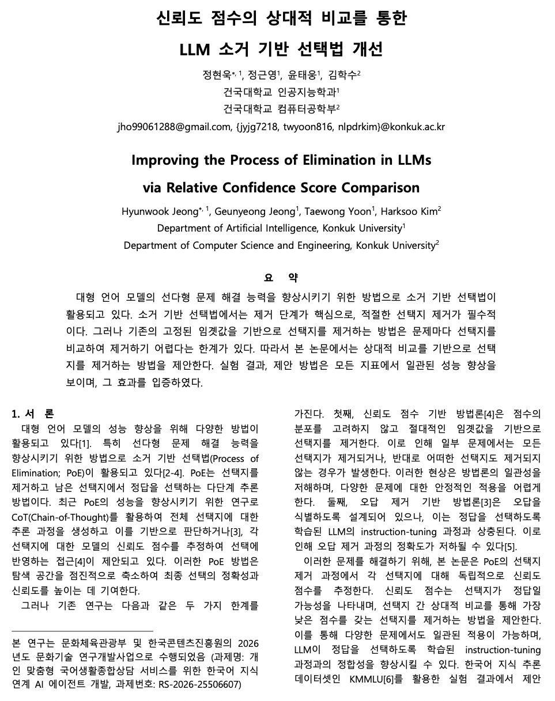
PreviewHyunwook Jeong, Geunyeong Jeong, Taewoong Yoon, Harksoo Kim
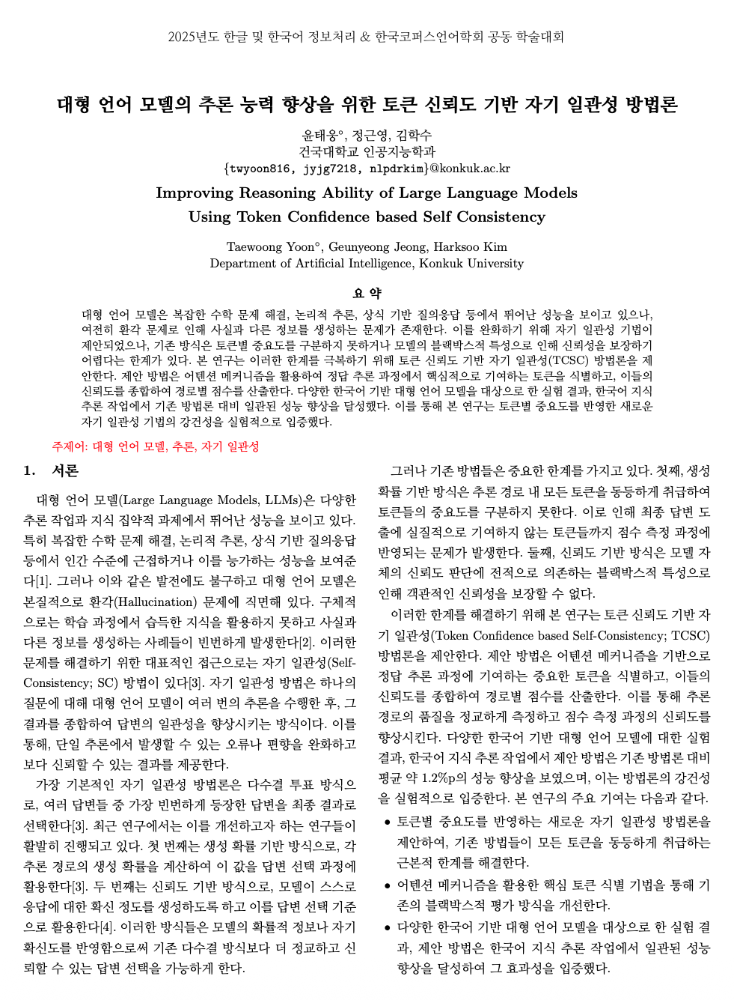
PreviewTaewoong Yoon, Geunyeong Jeong, Harksoo Kim
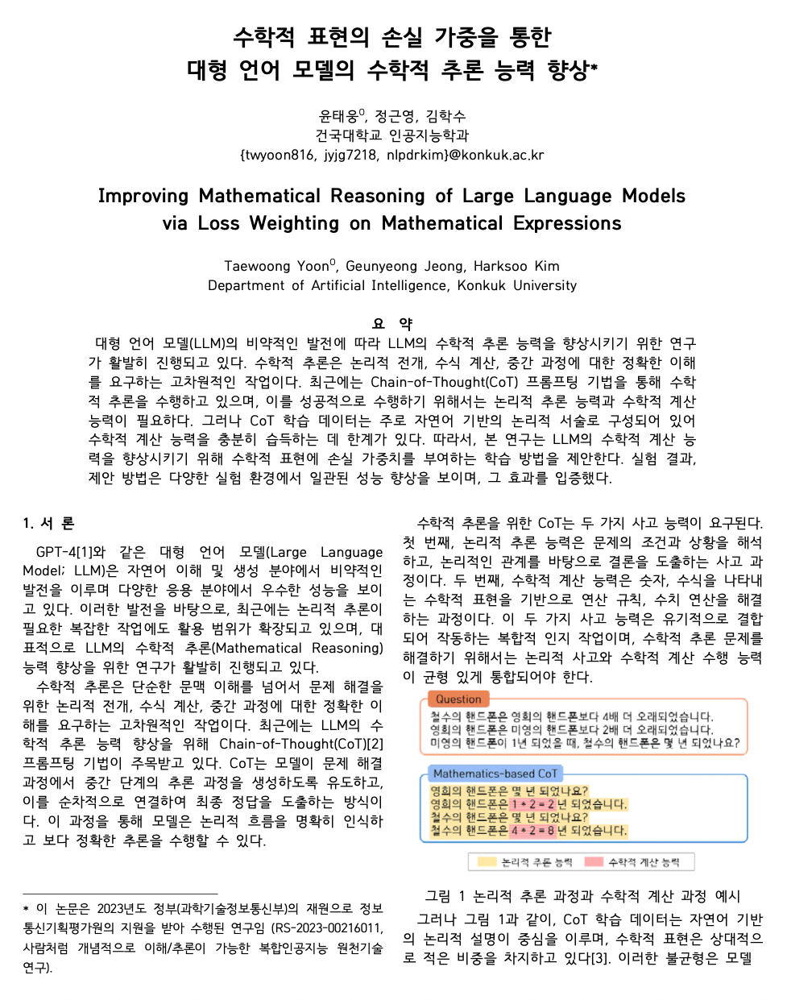
PreviewTaewoong Yoon, Geunyeong Jeong, Harksoo Kim
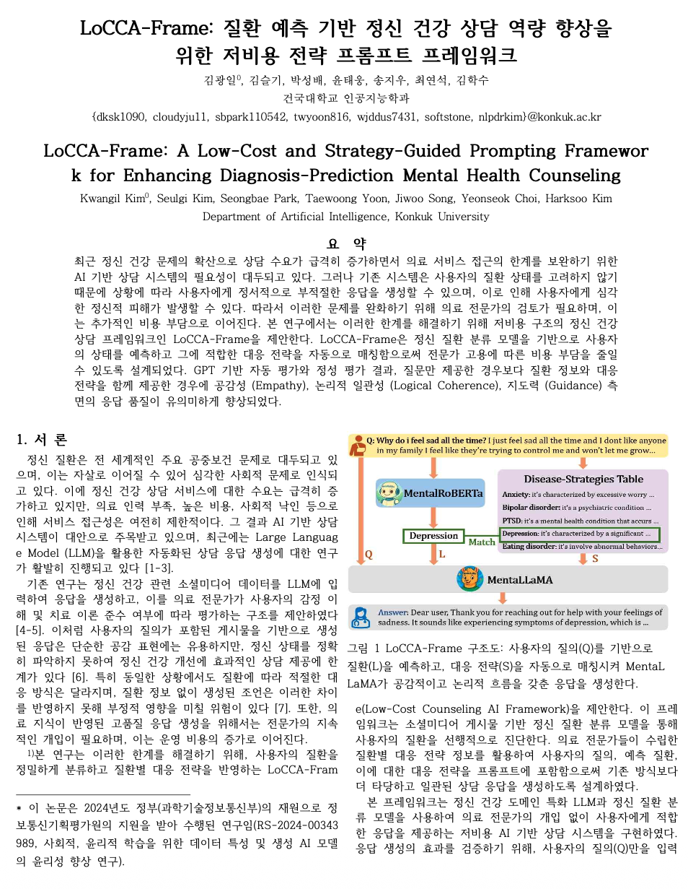
PreviewKwangil Kim, Seulgi Kim, Seongbae Park, Taewoong Yoon, Jiwoo Song, Yeonseok Choi, Harksoo Kim
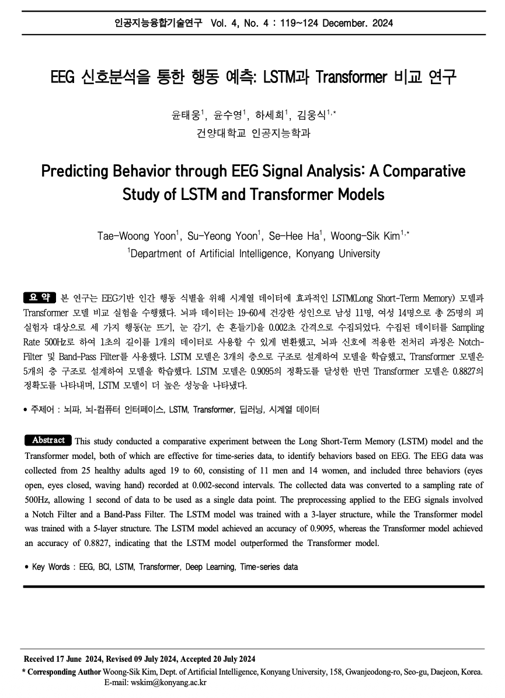
PreviewTaewoong Yoon, Suyeong Yoon, Sehee Ha, Woongsik Kim
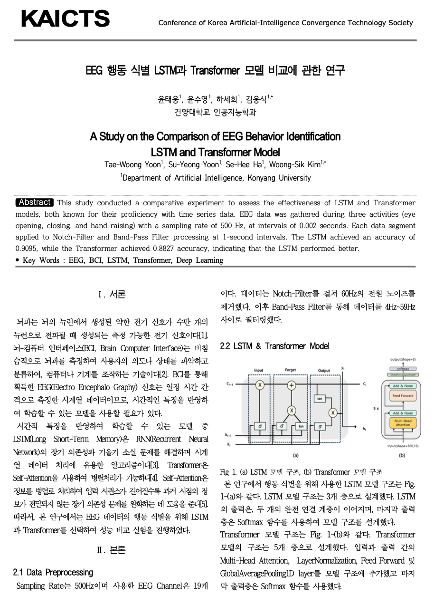
PreviewTaewoong Yoon, Suyeong Yoon, Sehee Ha, Woongsik Kim
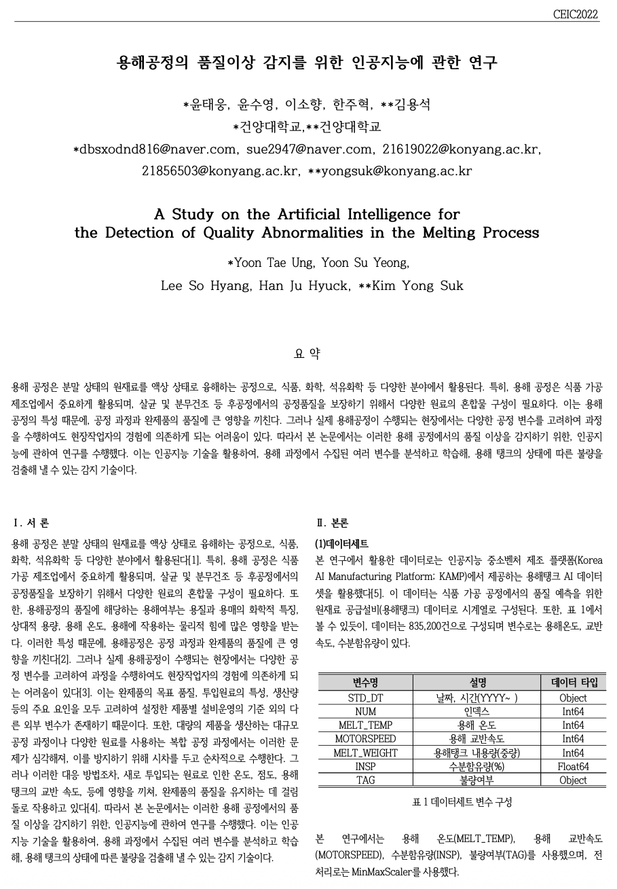
PreviewTaewoong Yoon, Suyeong Yoon, Sohyang Lee, Yongsuk Kim
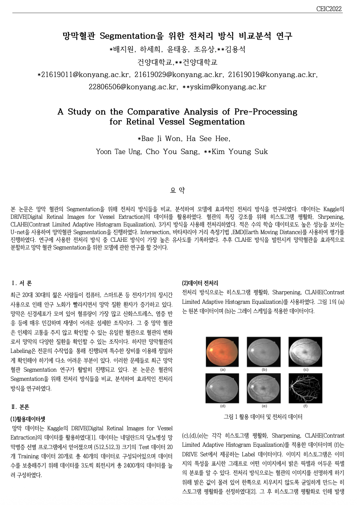
PreviewBaeji Won, Sehee Ha, Taewoong Yoon, Choyou Sang, Youngsuk Kim
KUNLP Team · Konkuk University
National Institute of Korean Language AI Competition Minister of Culture, Sports and Tourism Award
Microsoft Korea Artificial Intelligence Competition Microsoft Korea Award
KAICTS Spring Conference
Department of Artificial Intelligence, Konyang University · Feb 27, 2026